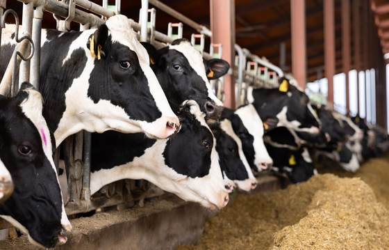

Biz işimizi sadece bir üretim süreci olarak görmüyoruz; toprağa, hayvana ve emeğe değer veren büyük bir ekosistemin parçasıyız.

2016Genç ve dinamik yapımızı modern bilimsel yaklaşımlarla birleştirdiğimiz kuruluş yılımız.
2016 yılında, hayvancılık sektöründe sürdürülebilir, sağlıklı ve yüksek verimli çözümler üretme hayaliyle yola çıktık. Bugün hayvan yemi katkısı alanında sadece Türkiye'de değil, dünyanın dört bir yanındaki üreticilerin güvenilir yol arkadaşıyız.
Formüllerimizi laboratuvardan çiftliğe uzanan bir titizlikle geliştiriyor, her adımda daha iyisini hedefliyoruz. Dinamik ekibimiz ve bitmeyen enerjimizle, sektörün alışılagelmiş kalıplarını kırarak her gün daha yenilikçi ürünlere imza atıyoruz.
Hayvan sağlığı ve verimliliğini önceleyen, bilimsel Ar-Ge ile geliştirilmiş, sürdürülebilir yem katkı maddeleri üreterek üreticilerin yanında güvenilir bir iş ortağı olmak.
İhracat ağımızı her geçen gün büyüterek, küresel hayvancılık sektöründe kalıcı bir iz bırakan, yenilikçi çözümleriyle öncü bir Türk markası olmak.
Hayvancılık sektöründe sürdürülebilir ve yüksek verimli çözümler üretme hayaliyle Rota Gıda Tarım & Hayvancılık kuruldu.
Laboratuvardan çiftliğe uzanan titiz bir Ar-Ge süreciyle, dinamik ekibimizle yenilikçi formüller geliştirmeye başladık.
Türkiye'de ürettiğimiz yüksek standartlı yem katkı maddeleriyle yurt içindeki üreticilerin ilk tercihi olduk.
Uluslararası standartlardaki üretim kalitemiz ve lojistik gücümüzle 15'ten fazla ülkeye ihracat gerçekleştiriyoruz.
Gelişen teknoloji ve bilimi yakından takip ederek her zaman en verimli çözümleri sunuyoruz.
İhracat yaptığımız tüm ülkelerin yüksek kalite ve güvenlik normlarına tam uyum sağlıyoruz.
Müşterilerimizi birer iş ortağı olarak görüyor, her süreçte şeffaf ve dinamik bir iletişim kuruyoruz.
Laboratuvardan çiftliğe uzanan titizlikle, sürdürülebilir ve yüksek verimli üretim süreçleri kurguluyoruz.
Ürün gamımız ve ihracat kapasitemiz hakkında detaylı bilgi almak için ekibimizle iletişime geçin.